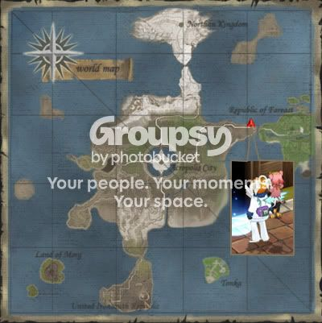
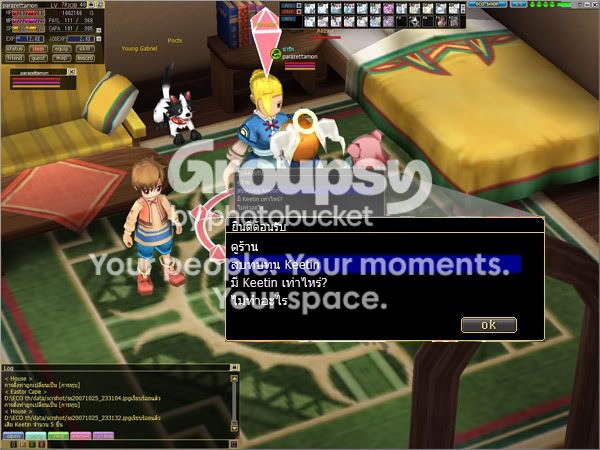
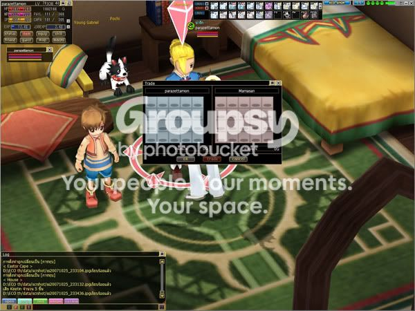
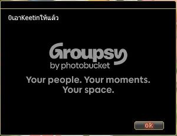

เป้าหมายของการบริจาค Keetin เพื่อไขกุญแจทั้งหมดอยู่ที่ 1,000,000 ea
อาจจะเป็นตัวเลขที่ค่อนข้างมากสำหรับหลายๆ คน แต่ว่าถ้าทุกคนร่วมมือช่วยเหลือกัน แน่นอนครับว่า 1 ล้านอันนี้ไม่ไกลเกินฝันแน่ๆ และปกติแล้วในแต่ละเซิร์ฟเวอร์ก็มีคนเล่นมากกว่า 1 ล้านคนอยู่แล้วซะด้วย ช่วยๆ กันครับวันละนิดวันละหน่อยเดี๋ยวก็ถึงเอง
สถิติยอดการบริจาค Keetin ของแต่ละเซิร์ฟเวอร์ :
Update at 26/10/2007 20:17
Moji : 216,524 อัน
Takoyaki : 343,263 อัน
เป้าหมาย Keetin และการปลดล๊อกไอเทมจากร้านเพ็ท :
Credit : garagablocket (ขอ Edit เล็กน้อยนะครับ)
100,000 อัน : เปิดร้าน Petshop, เริ่มขาย WanWan
200,000 อัน : เปิดขาย Petfood และ Nutrient
500,000 อัน : เริ่มขาย Blacktam(สุนัขสีดำ หาดูได้ที่เมืองฟาอีสนะครับ)
550,000 อัน : ขาย Red Veggy Stick เพิ่มอัตราการเติบโต HP, Phys Atk, S Hit, L Hit, ความเร็วในการโจมตี ของ Pet
600,000 อัน : ขาย Marine Veggy Stick เพิ่มอัตราการเติบโต HP, Def, S Avoid, L Avoid ของ Pet
650,000 อัน : ขาย Purple Veggy Stick เพิ่มอัตราการเติบโต HP, M Atk, M Hit ความเร็วในการร่าย ของ Pet
700,000 อัน : ขาย Blue Veggy Stick เพิ่มอัตราการเติบโต HP, L Avoid, M Def, M Resist ของ Pet
750,000 อัน : ขาย Green Veggy Stick เพิ่มอัตราการเติบโต Critical, การหลบหลีก Critical ของ Pet
800,000 อัน : ขาย Yellow Veggy Stick เพิ่มอัตราการเติบโต HP, การฟื้นฟู HP, การฟื้นฟู MP, การฟื้นฟู SP ของ Pet
900,000 อัน : ขาย Pet Guard ทำให้มอนสเตอร์ไม่โจมตี Pet เป็นเวลา 3 นาที
1,000,000 อัน : เพิ่ม Petshop เบอร์ 2, ขาย Dry Fog, ยาเพิ่ม HP Pet แบบใหม่(อันนี้ไม่รู้ว่าเป็นไง), ขาย Cocko เอาไก่มาจูงได้(สัตว์เลี้ยงนักธนูตัวใหม่ ^^)
อ่านตรงนี้แล้วอยากบริจาคแล้วละสิ!?
วิธีการรับบริจาคนั้นในเกมนั้นจะมี NPC คนหนึ่งที่รับบริจาค Keetin อยู่ครับ เธอชื่อว่า "Mamasan" จะอยู่ที่แมพ Easter Cape(แมพหน้าทางเข้าเมืองฟาอีส) ซึ่งจะอยู่ในบ้านนะครับ
*หน้าวาร์ปทางเข้าบ้านจะอยู่ที่พิกัด (203,63)

ส่วนวิธีการบริจาคนั้นก็ง่ายๆ ครับ ขั้นแรกก็คุยกับ NPC มาม่าซังก่อน แล้วเลือกหัวข้อว่า "สมทบทุน Keetin"

หลังจากที่เรากดไปแล้ว ก็จะขึ้นเป็นหน้าต่างเทรดคล้ายๆ ถังขยะ(จะพูดว่าเทรดกับคนอื่นน่าจะดีกว่าไหมเนี่ย) ก็ลาก Keetin ใส่เข้าไปเลยครับ

ตรวจสอบจำนวนให้เรียบร้อย กด OK และกด Trade ปุ่มแดงที่อยู่กลางได้เลย
หลังจากกดปุ่ม Trade แล้ว เกมก็จะบอกจำนวน Keetin ที่เราบริจาคไปครับ(ในที่นี้ผมยังไม่ได้บริจาคนะ เพราะว่าแค่ถ่ายรูปลงให้เฉยๆ)

ยังไงก็ขอเชิญชวนเพื่อนๆ มาร่วมบริจาค Keetin กันนะครับ เดาว่าเวลตันกันหลายคนแล้วยังไงก็มาร่วมมือช่วยเหลือกันครับ คนละเล็กละน้อยทำเพื่อทุกคนครับไม่ใช่ทำเพื่อเราเองเท่านั้นน้า~
แล้วจะอัพเดตเรื่อยๆ จ้า